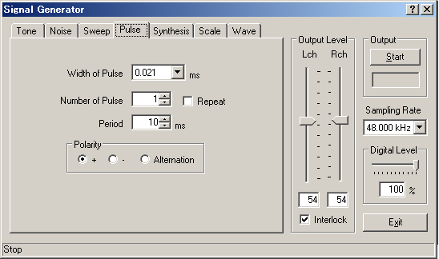
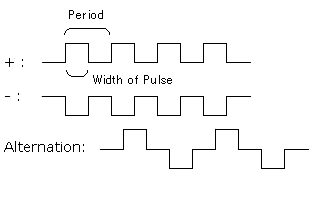
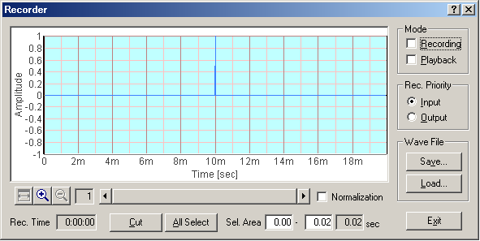
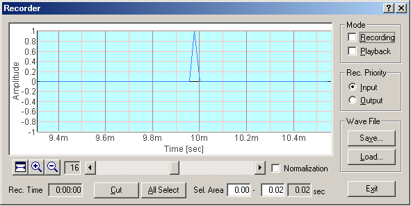

DSSF3 > RA > Reference Manual > Signal Generator

| Item | Description |
|---|---|
| Width of Pulse | Specify a width of pulse [ms]. |
| Number of Pulse | Specify a number of output pulses. If [Repeat] is checked, it will be repeated for the number of pulses until the Stop button is clicked. |
| Period | Specify a period of the pulses [ms]. |
| Polarity | Specify a polarity of pulses.  |


DSSF3 > RA > Reference Manual > Signal Generator